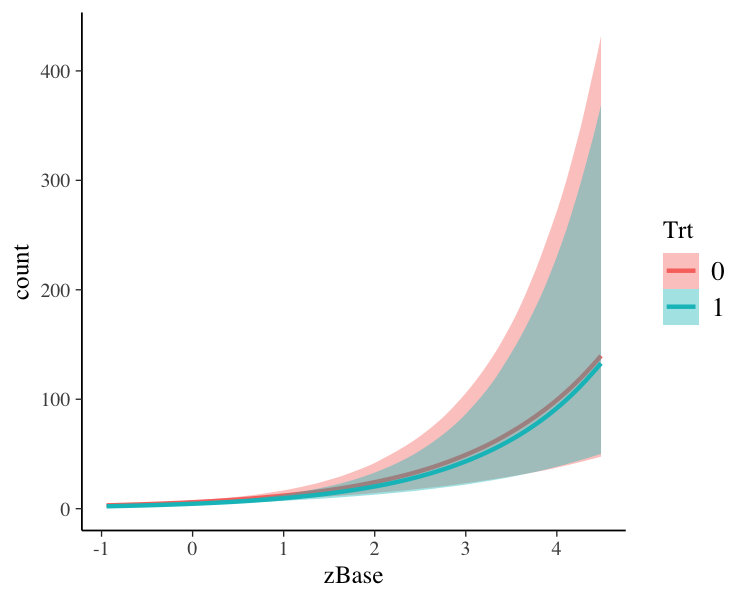

brms
Bayesian regression models using Stan
The brms package provides an interface to fit Bayesian generalized (non-)linear multivariate multilevel models using Stan. The formula syntax is very similar to that of the package lme4 to provide a familiar and simple interface for performing regression analyses.
A wide range of distributions and link functions are supported, allowing users to fit – among others – linear, robust linear, count data, survival, response times, ordinal, zero-inflated, hurdle, and even self-defined mixture models all in a multilevel context. Further modeling options include non-linear and smooth terms, auto-correlation structures, censored data, meta-analytic standard errors, and quite a few more. In addition, all parameters of the response distribution can be predicted in order to perform distributional regression. Prior specifications are flexible and explicitly encourage users to apply prior distributions that actually reflect their beliefs. Model fit can easily be assessed and compared with posterior predictive checks and leave-one-out cross-validation.
Getting Started
If you are new to brms we recommend starting with the vignettes and these other resources:
- Introduction to brms (Journal of Statistical Software)
- Advanced multilevel modeling with brms (The R Journal)
- Blog posts (List of blog posts about brms)
- Ask a question (Stan Forums on Discourse)
Installation
Install the latest release from CRAN
install.packages("brms")Install the latest development version from GitHub
if (!requireNamespace("remotes")) {
install.packages("remotes")
}
remotes::install_github("paul-buerkner/brms")You can also set build_vignettes=TRUE but this will slow down the installation drastically (the vignettes can always be accessed online anytime at paul-buerkner.github.io/brms/articles).
How to use brms
As a simple example, we use poisson regression to model the seizure counts in epileptic patients to investigate whether the treatment (represented by variable Trt) can reduce the seizure counts and whether the effect of the treatment varies with the (standardized) baseline number of seizures a person had before treatment (variable zBase). As we have multiple observations per person, a group-level intercept is incorporated to account for the resulting dependency in the data.
The results (i.e., posterior draws) can be investigated using
summary(fit1)
#> Family: poisson
#> Links: mu = log
#> Formula: count ~ zAge + zBase * Trt + (1 | patient)
#> Data: epilepsy (Number of observations: 236)
#> Draws: 4 chains, each with iter = 2000; warmup = 1000; thin = 1;
#> total post-warmup draws = 4000
#>
#> Group-Level Effects:
#> ~patient (Number of levels: 59)
#> Estimate Est.Error l-95% CI u-95% CI Rhat Bulk_ESS Tail_ESS
#> sd(Intercept) 0.58 0.07 0.46 0.73 1.01 768 1579
#>
#> Population-Level Effects:
#> Estimate Est.Error l-95% CI u-95% CI Rhat Bulk_ESS Tail_ESS
#> Intercept 1.77 0.11 1.54 1.99 1.00 753 1511
#> zAge 0.09 0.08 -0.07 0.26 1.00 830 1429
#> zBase 0.70 0.12 0.47 0.95 1.00 678 1389
#> Trt1 -0.26 0.16 -0.59 0.05 1.01 709 1356
#> zBase:Trt1 0.05 0.17 -0.29 0.37 1.01 721 1404
#>
#> Draws were sampled using sampling(NUTS). For each parameter, Bulk_ESS
#> and Tail_ESS are effective sample size measures, and Rhat is the potential
#> scale reduction factor on split chains (at convergence, Rhat = 1).On the top of the output, some general information on the model is given, such as family, formula, number of iterations and chains. Next, group-level effects are displayed separately for each grouping factor in terms of standard deviations and (in case of more than one group-level effect per grouping factor; not displayed here) correlations between group-level effects. On the bottom of the output, population-level effects (i.e. regression coefficients) are displayed. If incorporated, autocorrelation effects and family specific parameters (e.g., the residual standard deviation ‘sigma’ in normal models) are also given.
In general, every parameter is summarized using the mean (‘Estimate’) and the standard deviation (‘Est.Error’) of the posterior distribution as well as two-sided 95% credible intervals (‘l-95% CI’ and ‘u-95% CI’) based on quantiles. We see that the coefficient of Trt is negative with a zero overlapping 95%-CI. This indicates that, on average, the treatment may reduce seizure counts by some amount but the evidence based on the data and applied model is not very strong and still insufficient by standard decision rules. Further, we find little evidence that the treatment effect varies with the baseline number of seizures.
The last three values (‘ESS_bulk’, ‘ESS_tail’, and ‘Rhat’) provide information on how well the algorithm could estimate the posterior distribution of this parameter. If ‘Rhat’ is considerably greater than 1, the algorithm has not yet converged and it is necessary to run more iterations and / or set stronger priors.
To visually investigate the chains as well as the posterior distributions, we can use the plot method. If we just want to see results of the regression coefficients of Trt and zBase, we go for

A more detailed investigation can be performed by running launch_shinystan(fit1). To better understand the relationship of the predictors with the response, I recommend the conditional_effects method:
plot(conditional_effects(fit1, effects = "zBase:Trt"))
This method uses some prediction functionality behind the scenes, which can also be called directly. Suppose that we want to predict responses (i.e. seizure counts) of a person in the treatment group (Trt = 1) and in the control group (Trt = 0) with average age and average number of previous seizures. Than we can use
newdata <- data.frame(Trt = c(0, 1), zAge = 0, zBase = 0)
predict(fit1, newdata = newdata, re_formula = NA)
#> Estimate Est.Error Q2.5 Q97.5
#> [1,] 5.90325 2.486249 2 11
#> [2,] 4.59025 2.180262 1 9We need to set re_formula = NA in order not to condition of the group-level effects. While the predict method returns predictions of the responses, the fitted method returns predictions of the regression line.
fitted(fit1, newdata = newdata, re_formula = NA)
#> Estimate Est.Error Q2.5 Q97.5
#> [1,] 5.918847 0.6762827 4.666180 7.308699
#> [2,] 4.554778 0.5144053 3.630642 5.659664Both methods return the same estimate (up to random error), while the latter has smaller variance, because the uncertainty in the regression line is smaller than the uncertainty in each response. If we want to predict values of the original data, we can just leave the newdata argument empty.
Suppose, we want to investigate whether there is overdispersion in the model, that is residual variation not accounted for by the response distribution. For this purpose, we include a second group-level intercept that captures possible overdispersion.
fit2 <- brm(count ~ zAge + zBase * Trt + (1|patient) + (1|obs),
data = epilepsy, family = poisson())We can then go ahead and compare both models via approximate leave-one-out (LOO) cross-validation.
loo(fit1, fit2)
#> Output of model 'fit1':
#>
#> Computed from 4000 by 236 log-likelihood matrix
#>
#> Estimate SE
#> elpd_loo -671.6 35.8
#> p_loo 94.6 13.6
#> looic 1343.3 71.6
#> ------
#> Monte Carlo SE of elpd_loo is NA.
#>
#> Pareto k diagnostic values:
#> Count Pct. Min. n_eff
#> (-Inf, 0.5] (good) 209 88.6% 546
#> (0.5, 0.7] (ok) 18 7.6% 125
#> (0.7, 1] (bad) 7 3.0% 23
#> (1, Inf) (very bad) 2 0.8% 12
#> See help('pareto-k-diagnostic') for details.
#>
#> Output of model 'fit2':
#>
#> Computed from 4000 by 236 log-likelihood matrix
#>
#> Estimate SE
#> elpd_loo -596.2 14.1
#> p_loo 108.5 7.3
#> looic 1192.3 28.3
#> ------
#> Monte Carlo SE of elpd_loo is NA.
#>
#> Pareto k diagnostic values:
#> Count Pct. Min. n_eff
#> (-Inf, 0.5] (good) 84 35.6% 755
#> (0.5, 0.7] (ok) 96 40.7% 171
#> (0.7, 1] (bad) 50 21.2% 25
#> (1, Inf) (very bad) 6 2.5% 10
#> See help('pareto-k-diagnostic') for details.
#>
#> Model comparisons:
#> elpd_diff se_diff
#> fit2 0.0 0.0
#> fit1 -75.5 26.3The loo output when comparing models is a little verbose. We first see the individual LOO summaries of the two models and then the comparison between them. Since higher elpd (i.e., expected log posterior density) values indicate better fit, we see that the model accounting for overdispersion (i.e., fit2) fits substantially better. However, we also see in the individual LOO outputs that there are several problematic observations for which the approximations may have not have been very accurate. To deal with this appropriately, we need to fall back to other methods such as reloo or kfold but this requires the model to be refit several times which takes too long for the purpose of a quick example. The post-processing methods we have shown above are just the tip of the iceberg. For a full list of methods to apply on fitted model objects, type methods(class = "brmsfit").
Citing brms and related software
Developing and maintaining open source software is an important yet often underappreciated contribution to scientific progress. Thus, whenever you are using open source software (or software in general), please make sure to cite it appropriately so that developers get credit for their work.
When using brms, please cite one or more of the following publications:
- Bürkner P. C. (2017). brms: An R Package for Bayesian Multilevel Models using Stan. Journal of Statistical Software. 80(1), 1-28. doi.org/10.18637/jss.v080.i01
- Bürkner P. C. (2018). Advanced Bayesian Multilevel Modeling with the R Package brms. The R Journal. 10(1), 395-411. doi.org/10.32614/RJ-2018-017
- Bürkner P. C. (2021). Bayesian Item Response Modeling in R with brms and Stan. Journal of Statistical Software, 100(5), 1-54. doi.org/10.18637/jss.v100.i05
As brms is a high-level interface to Stan, please additionally cite Stan (see also https://mc-stan.org/users/citations/):
- Stan Development Team. YEAR. Stan Modeling Language Users Guide and Reference Manual, VERSION. https://mc-stan.org
- Carpenter B., Gelman A., Hoffman M. D., Lee D., Goodrich B., Betancourt M., Brubaker M., Guo J., Li P., and Riddell A. (2017). Stan: A probabilistic programming language. Journal of Statistical Software. 76(1). doi.org/10.18637/jss.v076.i01
Further, brms relies on several other R packages and, of course, on R itself. To find out how to cite R and its packages, use the citation function. There are some features of brms which specifically rely on certain packages. The rstan package together with Rcpp makes Stan conveniently accessible in R. Visualizations and posterior-predictive checks are based on bayesplot and ggplot2. Approximate leave-one-out cross-validation using loo and related methods is done via the loo package. Marginal likelihood based methods such as bayes_factor are realized by means of the bridgesampling package. Splines specified via the s and t2 functions rely on mgcv. If you use some of these features, please also consider citing the related packages.